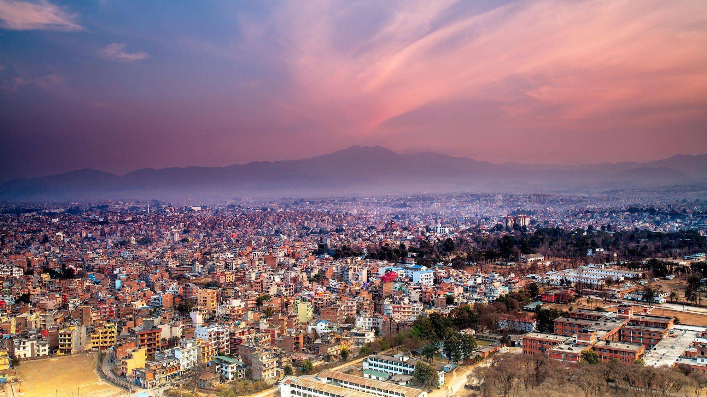
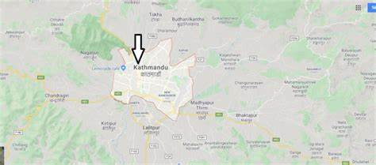
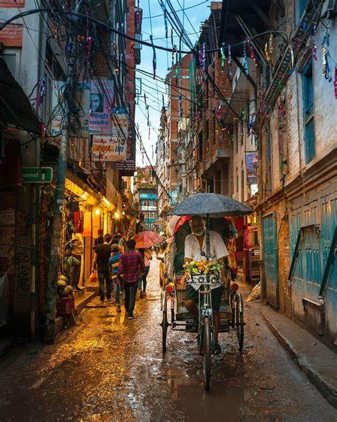
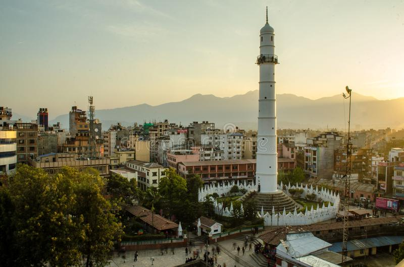

Explore Kathmandu: A Journey Through History, Culture, and Nature

Kathmandu, abbreviated as KTM, is the vibrant and culturally rich capital city of Nepal. Nestled in the Kathmandu Valley, it lies in the central part of the country, surrounded by picturesque hills and mountains. With its unique blend of ancient traditions and modern developments, KTM serves as the political, economic, and cultural hub of Nepal.
Kathmandu is a unique blend of diverse cultures and traditions. Kathmandu is famous for its stunning architectural heritage, including UNESCO World Heritage Sites like many Durbar Squares, Swayambhunath Stupa (Monkey Temple), Pashupatinath Temple, and Boudhanath Stupa. These sites showcase a mix of traditional Newari, Hindu, and Buddhist architecture, reflecting the city's multiculturalism.

Despite the city's modern developments, Kathmandu has managed to preserve its traditional charm. The ancient temples, such as the Kumari Ghar (residence of the living goddess) and the Taleju Temple, stand as living testaments to the city's spiritual legacy. The bustling bazaars and markets, such as Asan Bazaar and Indra Chowk, are vibrant hubs of commerce and provide a glimpse into the daily lives of locals.
Kathmandu's narrow streets, known as gallis, are a labyrinthine network that leads to hidden courtyards, hidden temples, and unexpected architectural marvels. Wandering through these streets is like stepping back in time, where the sights, sounds, and smells evoke a sense of nostalgia and wonder.
All these narrow, bustling streets of the city are lined with shops, bazaars, and markets, offering a wide range of goods, from traditional handicrafts and exquisite textiles to spices and fresh produce. The vibrant atmosphere of the Thamel district, with its myriad of restaurants, cafes, and shops, attracts tourists from all over the world, providing a glimpse into the lively local culture.

Festivals like Dashain, Tihar, and Buddha Jayanti bring the city to life with vibrant celebrations. Kathmandu also serves as a gateway to the Himalayas, offering treks to famous trails like Everest, Annapurna, and Langtang. The city's cuisine ranges from traditional Newari dishes to international flavors, and the people of Kathmandu are known for their warm hospitality. Overall, Kathmandu is a captivating destination that combines ancient traditions with modern aspirations, attracting visitors from around the world.